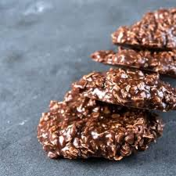

No Bake Cookies
| Time: 15 minutes | Yield: about 30 cookies |

Description
A sweet chocolatey, peanut butter, oat delight. No baking involved. Only joy.
Tasty no-bake cookies made with quick-cooking oats, peanut butter, and cocoa. For best results, start timing when the mixture reaches a full rolling boil; this is the trick to successful cookies. If you boil too long the cookies will be dry and crumbly. If you don't boil long enough the cookies won't form properly.
Ingredients
- 2 cups sugar
- 1/2 cup milk
- 1 stick unsalted butter
- 1/4 cup cocoa powder
- 3 cups rolled oats
- 1 cup peanut butter
- 1 tbs vanilla extract
- pinch of salt
Steps
- Heat your pot to a medium temperature
- Melt butter and heat milk
- When butter is melted, stir in chocolate, vanilla and sugar
- Mix in peanut butter
- Once peanut butter is mixed in, start adding the oats until fully mixed
- Take spoon and dollop it on parchment paper
- Let sit for thirty minutes
- Enjoy!